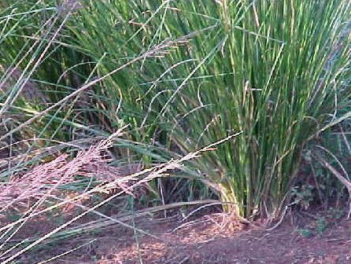

खसVetiver
Chrysopogon zizanioides · Poaceae · FLR-0110

- Scientific name
- Chrysopogon zizanioides (L.) Roberty
- Family
- Poaceae
- Hindi
- खस
- Status here
- native
- IUCN
- not evaluated
When to look कब देखें
Present all year.
Uses and possibilities उपयोग और संभावनाएँ
“Traditional medicine” means a documented traditional use, not a claim that it works. Nothing on this page is medical advice.
Drawn from the documented uses in the profile below, where each is labelled traditional, current or a research lead. All uses →
खस / Vetiver
Chrysopogon zizanioides (L.) Roberty — Poaceae
खस — वह घास जिसकी जड़ें मिट्टी के नीचे तीन-चार मीटर तक सीधी उतरती हैं और जिनकी सुगंध से गरमी की दोपहर ठंडी होती थी। खस की टट्टी खिड़की पर लटकाकर पानी छिड़को तो कमरा ठंडा और महकदार; खस का शरबत, खस का इत्र, और अब खस की जड़ से ढलान और नदी-किनारे बाँधे जाते हैं। ऊपर से यह बस एक ऊँची, घनी, गुच्छेदार घास है।
Quick Identification त्वरित पहचान
| Feature | Description |
|---|---|
| Habit | Dense, erect, clump-forming grass 1–2 m, clumps up to a metre across, never spreading by runners |
| Leaves | Long, narrow, stiff, 45–100 cm × 1 cm, folded at the base, rough-edged, green turning straw |
| Stems | Upright, smooth, with a pithy core |
| Flower head | An open, oblong panicle 15–40 cm of many whorled branches, purple-brown to grey, August–November |
| Spikelets | In pairs, one stalked, with short awns and a bristly base |
| Roots | The clue: massive, spongy, straight-down roots that smell of khus when crushed or dried |
Field tip: On a river bank or wet low ground, a tall clumping grass without runners, with an open purplish plume in autumn. Dig at the edge of a clump and crush a root: the sweet, earthy khus scent settles it. On bunds and canal sides it may be planted in lines.
हिंदी — कैसे पहचानें: नदी किनारे या नीची गीली ज़मीन पर ऊँची, घनी, गुच्छेदार घास जो दूब की तरह फैलती नहीं; पतझड़ में खुला बैंगनी-भूरा फूल-डंठल। जड़ मसलकर सूँघिए — खस की महक आई तो यही है।
Morphology आकारिकी
Biometrics (north Indian wild and planted stands):
| Measurement | Range |
|---|---|
| Height | 100–200 cm |
| Clump diameter | 30–100 cm |
| Leaf blade | 45–100 × 0.6–1.2 cm |
| Panicle | 15–40 cm |
| Spikelet | 4–6 mm |
| Root depth | 2–4 m, exceptionally more |
Roots: Abundant, fibrous, spongy, growing almost vertically rather than sideways, with few laterals: a living curtain in the soil. They hold the aromatic oil in cells of the cortex; north Indian wild plants seed freely and have a lighter oil than the sterile southern cultivated type.
Leaves: Keeled, with a fringed ligule, the margins minutely toothed; the upper surface rough, the lower smooth.
Inflorescence: A loose panicle of whorled racemes, each bearing pairs of spikelets, the sessile one bisexual and awned, the stalked one male; the purple tint is distinctive.
हिंदी: जड़ें बहुत, स्पंजी, लगभग सीधी नीचे; यही सुगंध और यही मिट्टी पकड़ने की ताक़त। उत्तर भारत की जंगली खस बीज बनाती है, दक्षिण की खेती वाली नहीं।
Behaviour & Ecology व्यवहार और पारिस्थितिकी
A grass of floodplains and wetland margins that will also stand months of drought, because its roots reach water that other plants cannot. It neither spreads by runners nor seeds aggressively in the north, so a planted hedgerow stays a hedgerow. That root curtain is the basis of the "vetiver system": lines of clumps along a contour or a bank slow runoff, trap silt, and hold the slope, a technique promoted by the World Bank from the 1980s and now used from Haiti to Vietnam, with India among the originating countries.
The clumps shelter Red-wattled Lapwing, quail and warblers at wetland edges and host Two-Spotted Cricket and grasshoppers; the seed heads feed finches and munias in autumn. Cattle graze the young shoots.
हिंदी: बाढ़ वाली और दलदली ज़मीन की घास जो सूखा भी सह लेती है, क्योंकि जड़ें बहुत नीचे का पानी पा लेती हैं। फैलती नहीं, इसलिए लगाई हुई कतार कतार ही रहती है। जड़ों का यह परदा ढलान और किनारे बाँधता है — यही "वेटिवर सिस्टम" है जो अब दुनिया भर में अपनाया गया है।
Life Cycle / Phenology जीवन चक्र
| Month / season | Event |
|---|---|
| June–July | New growth with the rains |
| August–November | Flowering; seed in wild northern plants |
| December–February | Roots at their most aromatic; the traditional harvest season |
| March–May | Leaves dry; clumps stand through the heat, resprouting from the base |
Planted from clump divisions ("slips") at the start of the rains; a hedge closes in a season. A clump lives for decades.
हिंदी: बरसात में हरी, पतझड़ में फूल, सर्दी में जड़ सबसे सुगंधित और खोदी जाती है, गरमी में सूखी पर ज़िंदा। कलमों (स्लिप) से बरसात में लगाई जाती है।
Associated Species / Interactions संबंधित प्रजातियाँ
- Wetland-edge neighbours: Kans Grass, Common Reed, Common Cattail on the same banks.
- Shelter: Red-wattled Lapwing, quail, Two-Spotted Cricket.
- Seed-eaters: munias and House Sparrow on the autumn heads.
Pests and Diseases कीट और रोग
- Few of consequence; stem borers and leaf blight in planted stands occasionally.
- Termites take dead leaf bases in the dry season.
- Rodents nest in old clumps.
Agricultural / Human Relevance कृषि प्रासंगिकता
Traditional and Ethnobotanical Use (documented uses; not medical advice):
- Cooling screens. The khas ki tatti: mats of woven root hung on doors and windows and kept wet, which cooled and scented rooms across northern India before electric fans, and are still made in the Doab towns. Hand fans of khus root likewise.
- Perfume. Khus attar, distilled in Kannauj and Lucknow for centuries, one of the great Indian perfumes; vetiver oil is a base note in perfumery worldwide.
- Sherbet and flavour. Khus syrup and khus sharbat, the green summer drink; the root flavours water, sweets and paan.
- Traditional medicine. The root (ushira) is a classical cooling, febrifuge and diaphoretic in Ayurveda and Unani, recorded in Kirtikar & Basu and Chopra.
- Thatch, brooms and rope from the leaves and stems.
Today. Vetiver oil is a modest Indian export; vetiver hedges are planted by watershed and road projects across the country; the Kannauj attar trade continues on a small scale.
Research direction (a lead, not a result). Vetiver for stabilising embankments and canal banks, treating wastewater in constructed wetlands, and taking up heavy metals from contaminated soil has a large published literature, including Indian field trials. For the district, the live question is practical: whether lines of local khas on the eroding banks of the Kuwano and the canals would hold them, and whether the roots pay as a crop at the same time.
हिंदी: खस की टट्टी से गरमी में कमरा ठंडा, खस का इत्र (कन्नौज, लखनऊ), खस का शरबत, और वैद्यक में शीतल जड़ (उशीर)। आज खस की कतारें ढलान, नदी-किनारे और सड़क के तटबंध बाँधने में लगाई जाती हैं; गंदे पानी की सफाई में भी शोध हुआ है। यहाँ नहर और नदी के कटते किनारों पर आज़माने लायक।
Expected Locally स्थानीय रूप से अपेक्षित
Not a field record. Written from published accounts for eastern Uttar Pradesh. No confirmed local sighting yet — if you have seen it, that is what the atlas needs.
अभी तक स्थानीय पुष्टि नहीं। यह विवरण प्रकाशित स्रोतों से है, किसी अवलोकन से नहीं।
To be expected as wild clumps on river banks and the margins of seasonal wetlands and low flooded ground, and in planted lines on some bunds and embankments. The root scent is the certain test; the plant is easily passed over as "just tall grass".
Distribution वितरण
Global range: Native to the Indian subcontinent; cultivated and naturalised throughout the tropics for its oil and for erosion control.
In India: Wild across the Gangetic plain, Rajasthan, central India and the north-east on floodplains and wet ground; cultivated in Kerala, Karnataka, Tamil Nadu and Uttar Pradesh.
In Uttar Pradesh: Wild in the plains, especially along rivers; the Bharatpur–Doab belt is the old source of khus roots.
In Basti district / eastern UP: Expected along the Kuwano, Rapti and Ghaghara floodplains and wet lowlands.
Research Questions शोध प्रश्न
Anyone can investigate these | कोई भी इन प्रश्नों की जाँच कर सकता है
- Is there wild khas on the river bank near your village? / आपके गाँव के पास नदी किनारे जंगली खस है क्या? — Crush a root of each tall clump grass and smell.
- Does anyone still make khas tatti or khus sharbet here? — Ask the older generation and the bazaar.
- How deep do the roots go in our soil? / यहाँ की मिट्टी में जड़ कितनी गहरी जाती है? — Dig beside one clump with the owner's leave and measure.
- Does a line of khas hold a bund through one monsoon? — Plant slips along ten metres of an eroding bund in June; compare with ten metres unplanted after the rains.
- Which birds shelter in the clumps in winter? — Walk the bank at dawn and note what flushes.
Similar Species मिलती-जुलती प्रजातियाँ
| Species | How to tell apart | हिंदी |
|---|---|---|
| Kans Grass (Saccharum spontaneum) | Spreads by runners into sheets; silvery-white fluffy plume; roots not aromatic | फैलने वाली, सफ़ेद रुई का फूल |
| Lemongrass (Cymbopogon species) | Similar clump, but leaves smell of lemon when crushed, not the roots; plume greyish and drooping | पत्ती नींबू जैसी महकती है |
| Kusha Grass (Desmostachya bipinnata) | Stiffer and sharper, dense narrow brush-like head, on usar; roots creep sideways | कड़ी, ऊसर पर, जड़ फैलती है |
Field rule: A tall non-spreading clump grass with a loose purplish plume whose roots smell of khus is vetiver; no other grass of the district has scented roots.
Taxonomy & Classification वर्गीकरण
Original description. Linnaeus, Mantissa Plantarum 2: 183 (1771), as Phalaris zizanioides. Long known as Vetiveria zizanioides (L.) Nash, the name in most Indian literature; transferred to Chrysopogon by Roberty in 1960 (Bulletin de l'Institut Français d'Afrique Noire, série A, 22: 106) after the two genera were merged. "Vetiver" is from the Tamil vettiver, "root that is dug".
Subspecies. Monotypic — no subspecies are currently recognised; the fertile north Indian wild type and the sterile cultivated southern type are regarded as forms of one species.
Family and order placement. Poaceae, subfamily Panicoideae, tribe Andropogoneae, with sugarcane, sorghum and the kans and munja grasses; order Poales.
Phylogenetic notes. Molecular work supports placing Vetiveria inside Chrysopogon; the fertile and sterile vetiver lineages are being distinguished by DNA markers for erosion-control planting.
IUCN status rationale. Not evaluated. Widespread, and extensively planted.
Photo Gallery फोटो गैलरी
Photos needed आवश्यक फोटो
- [ ] Clump on a river bank with the plume (गुच्छा और फूल)
- [ ] Dug roots, washed (जड़ें)
- [ ] A khas screen or fan, if any survive locally (टट्टी)
Atlas Connections संबंधित प्रजातियाँ
- Kans Grass and Munja Grass — the other tall grasses of the banks, same tribe
- Kusha Grass — the other grass that holds hard ground
- Common Reed and Common Cattail — companions of the wetland edge
- Red-wattled Lapwing — nests among the clumps
References संदर्भ
- Linnaeus, C. (1771). Mantissa Plantarum, vol. 2, p. 183. Stockholm. [original description, as Phalaris zizanioides]
- Roberty, G. (1960). Monographie systématique des Andropogonées du globe. Boissiera 9; and Bulletin de l'Institut Français d'Afrique Noire, sér. A, 22: 106. [transfer to Chrysopogon]
- Hooker, J.D. (1897). The Flora of British India, vol. 7. L. Reeve, London. (as Andropogon squarrosus)
- Bor, N.L. (1960). The Grasses of Burma, Ceylon, India and Pakistan. Pergamon Press, Oxford.
- Kirtikar, K.R. & Basu, B.D. (1935). Indian Medicinal Plants, 2nd ed., vol. 4. Lalit Mohan Basu, Allahabad.
- National Research Council (1993). Vetiver Grass: A Thin Green Line Against Erosion. National Academy Press, Washington, D.C.
- Council of Scientific and Industrial Research (1976). The Wealth of India: Raw Materials, vol. 10 (Sp–W). CSIR, New Delhi.
- GBIF Occurrence Data — Chrysopogon zizanioides, India (2026).
Source file: species/flora/grasses/khas_grass.md